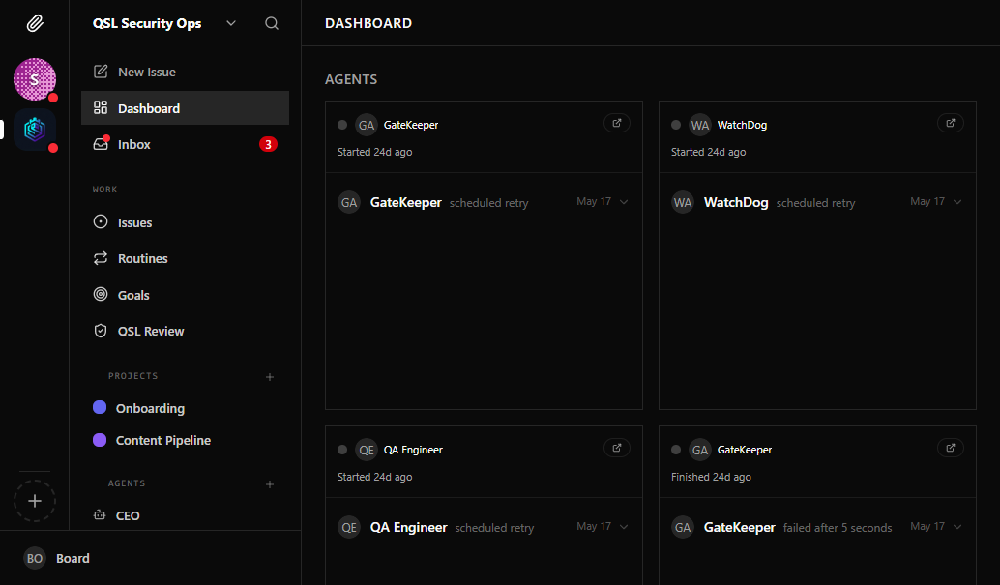
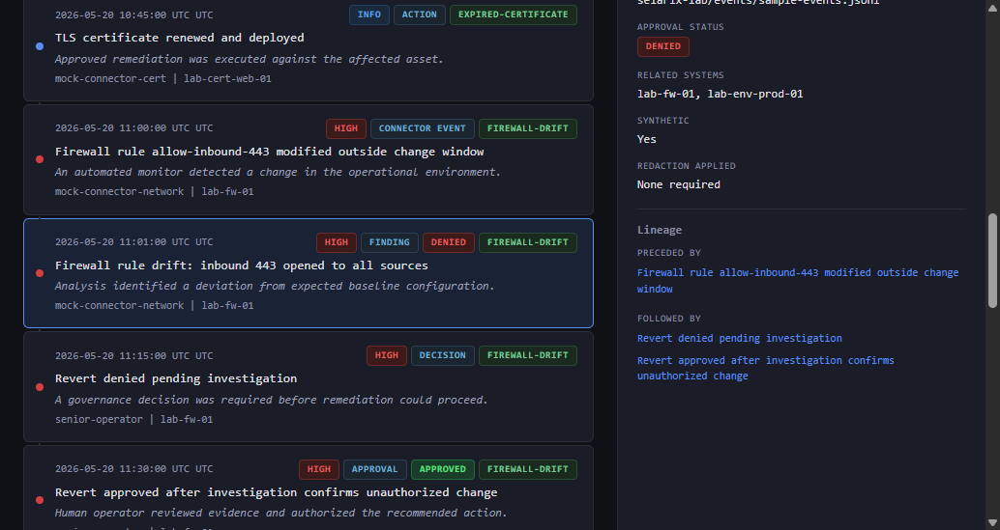
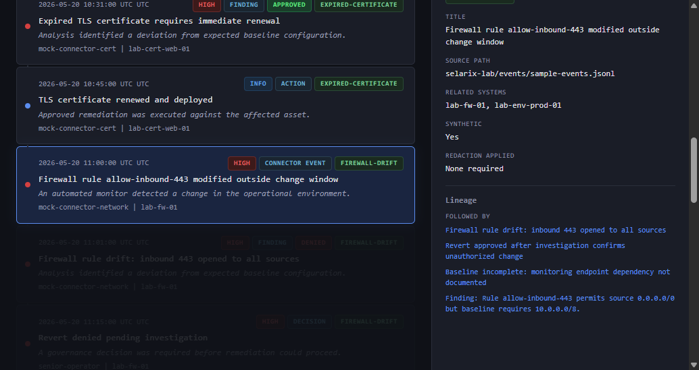
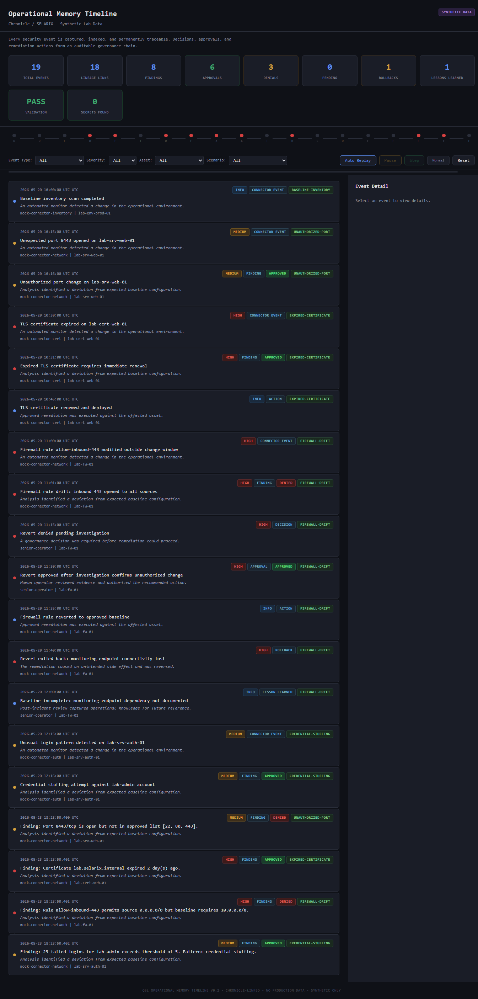

Open-Source Attribution
The SELARIX Operations Platform is built on and extended from the Paperclip open-source project. Paperclip is third-party software developed by the Paperclip community. This case study demonstrates how QuantumShield Labs customized, deployed, and extended Paperclip for governed AI operations. We do not claim ownership of Paperclip itself.
SELARIX Operations Platform
Multi-Company Control Plane for Governed AI Operations
The SELARIX Operations Platform is a customized deployment of the Paperclip open-source control plane, extended for QuantumShield Labs' governed AI security operations. It provides the corporate equivalent of a boardroom, HR department, finance controller, and project management office — expressed as real software.
Built by Us / Built on
Customizations & Extensions
- Governance rules tailored for security operations compliance
- Agent adapter configurations for security-tool integrations
- Board-gated approval workflows for investigation scope changes
- Integration with QuantumShield Core audit trail formats
- Custom cost attribution for per-engagement client billing
Adopted from Paperclip
- Multi-company data model and scoping
- Agent heartbeat + scheduler adapter framework
- Hierarchical task lifecycle (backlog → done)
- Budget hard-stop / auto-pause engine
- Board operator governance primitives
- Plugin SDK and external adapter registry
All adopted components remain open-source and traceable to the Paperclip upstream.
The Problem We Solved
Task management software does not go far enough. When your workforce is AI agents, you need more than a to-do list.
- AI coding assistants run ad-hoc single-session loops with no company structure, cost controls, or governance
- Project management tools are designed for human teams and cannot orchestrate autonomous agent execution loops
- Neither category provides what autonomous companies need: a structured, governable operating system for AI labor
What SELARIX Delivers
A single-tenant control plane for running autonomous AI companies. One instance manages multiple companies, each with its own org chart, agent workforce, task hierarchy, budget, and governance rules.
- SELARIX does NOT run agents — it orchestrates them
- Agents execute wherever they run and phone home to the REST API
- Separation of control plane from execution plane enables general-purpose adapters
Architecture at a Glance
Board Operator (Web UI)
|
+--------------+--------------+
| | |
Dashboard Org Chart Task Board Approvals Costs
| | | | |
+--------------+--------------+----------+-------+
|
SELARIX Control API (/api)
|
+--------------+--------------+
| | |
Companies Agents Issues Projects
Goals Heartbeats Costs Activity
| | |
+--------------+--------------+
|
PostgreSQL (embedded or hosted)
|
+------------------+------------------+
| | |
Claude Code Codex CLI Cursor CLI
| | |
+-------------------+-------------------+
Agent Execution Plane
(agents run independently, phone home via API)
Key Capabilities
| Company Management | Multi-company data model; create, configure, archive, import/export portable company packages. |
| Agent Workforce | 10 adapter types (Claude, Codex, Cursor, Gemini, OpenCode, Pi, OpenClaw, Hermes, HTTP, process); org tree with strict reporting hierarchy; heartbeat-based invocation with configurable schedules. |
| Task System | Hierarchical task trees tracing to company goals; single-assignee with atomic checkout; full lifecycle states (backlog → todo → in_progress → in_review → done); comments, attachments, and linked documents. |
| Cost Controls | Per-agent, per-project, per-company budgets in dollars + tokens; soft alerts at configurable thresholds; hard-limit auto-pause at 100% utilization; cost event ingestion from any provider/model. |
| Board Governance | Human board operator with full-system visibility and override authority; approval gates for agent hiring and CEO strategy proposals; irreversible agent termination; every mutation written to an audit trail. |
| Plugins & Extensibility | Plugin SDK (define plugin workers + UI components); external adapter registry for third-party agent runtimes; sandbox provider integration (E2B); MCP protocol server exposing 37 tools to AI agents. |
| Dashboard & Visibility | Real-time dashboard with agent counts, issue statuses, MTD spend, budget utilization, and pending approvals; live dashboard with WebSocket updates; activity audit stream; org chart visualization. |
Use Cases
Managed Service Providers
Operate AI-powered service teams for multiple clients simultaneously. Per-client cost isolation, agent template reuse, and activity audit for SLAs.
Security Operations
Agent hierarchy for escalation, secret management with encryption, budget hard-stops for investigation bursts, and complete audit trails for SOC 2 compliance.
Content Operations
Brand-level isolation via companies, editorial review via issue status workflow, documents as first-class work products with revision control, and per-brand cost attribution.
Multi-Company Orchestration
Portfolio-level cost visibility, company portability for spin-offs, cross-company agent transfer, and board-level resource reallocation across ventures.
Technical Foundation
Frontend
- React + Vite SPA with 45+ distinct page routes
- TanStack Query, Tailwind CSS, shadcn/ui components
- WebSocket live updates for real-time activity streams
Backend
- TypeScript + Express REST API (38 route modules, 106 service modules)
- Better Auth for session management
- Company-scoping enforced in every database query
Database
- Drizzle ORM with 75 schema tables, 73 migrations
- PostgreSQL: embedded PGlite (dev), Docker (local), Supabase/cloud (production)
Adapters & Testing
- Pluggable adapter interface: invoke/status/cancel
- Vitest unit/integration + Playwright e2e suites
- OpenClaw smoke test harness
Screenshots

Operations dashboard with agent counts, issue statuses, and budget utilization.

Event detail panel with governance metadata and approval chain.

Active replay of decision sequences for audit reconstruction.

Full timeline view with event lineage and validation status.
Build Governable AI Infrastructure
Interested in multi-agent orchestration, cost-controlled AI operations, or governance-ready control planes? Let's discuss how the SELARIX Operations Platform applies to your needs.